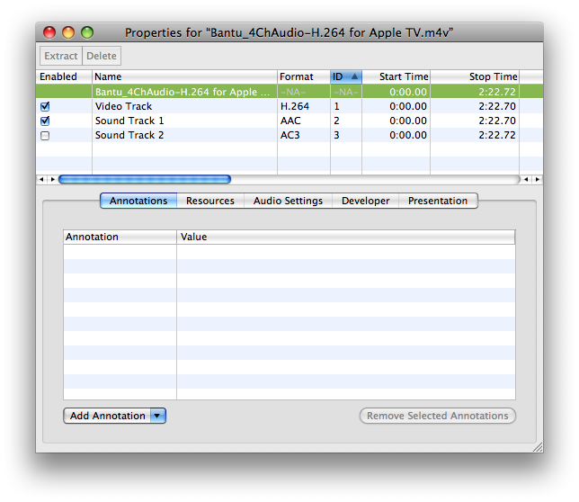
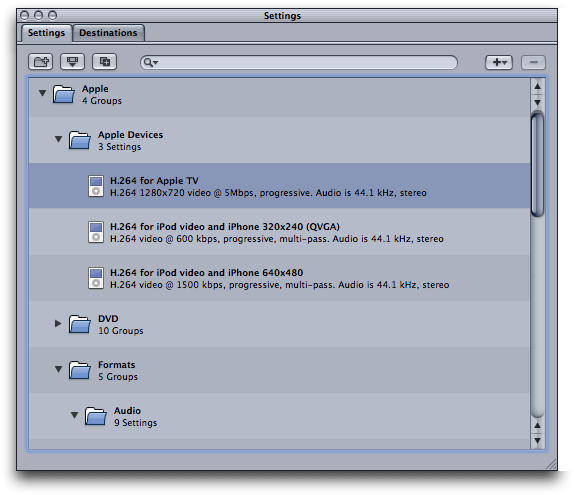
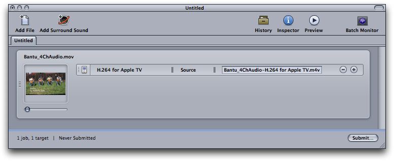
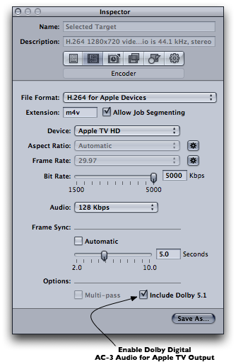
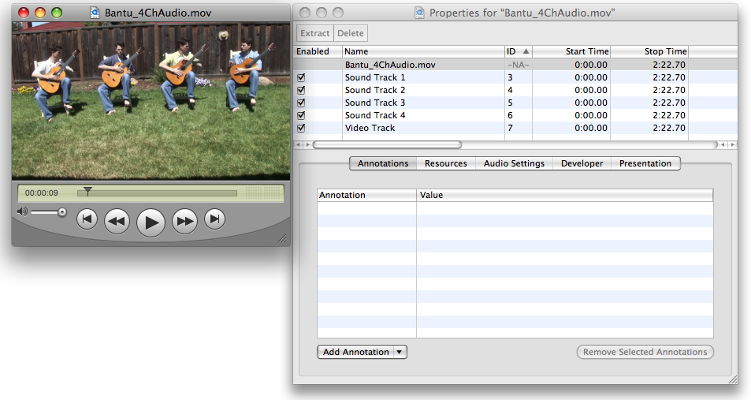
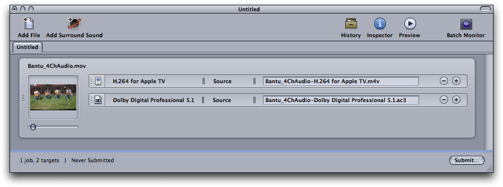
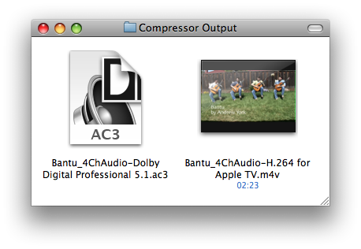
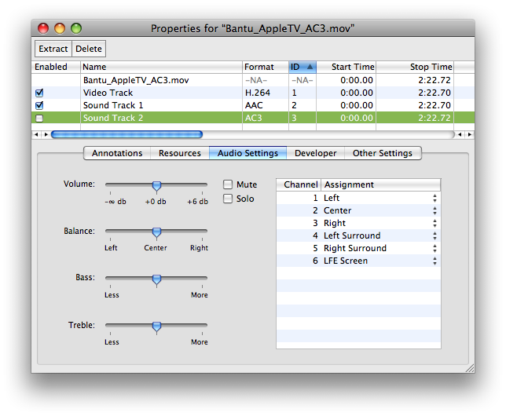

|
Q: How can I create media files for Apple TV that contain a Dolby Digital Professional AC-3 audio track?A: Apple TV supports playback of .mov and .m4v files containing Dolby Digital Professional AC-3 encoded audio. Content developers can take advantage of Compressor 3 and its ability with Mac OS X 10.5 to automatically produce Apple TV AC-3 compatible .m4v files. QuickTime application developers can use QTKit or QuickTime C APIs to assemble Apple TV compatible .mov files containing Dolby Digital Professional AC-3 audio. Track LayoutApple TV media files containing Dolby Digital Professional AC-3 must conform to a specific track layout. Two Sound Tracks are used and both must be provided:
The AAC Stereo audio track must appear first in the media file and must be enabled by default. The Dolby Digital Professional AC-3 Surround track must appear after the AAC Stereo track and must be disabled by default. See Figure 1. Figure 1: QuickTime Pro Movie Properties Window.  IMPORTANT: It is good practice to encode the audio for both tracks at the same sample rate, 48kHz is normal. While this is not a strict requirement, be aware that if both audio tracks have different sample rates the Apple TV will default to the sample rate of the AC-3 surround audio track. If the AAC stereo audio track is being used for playback and has a different sample rate from the AC-3 surround audio track, for example the sample rate of the AAC track is 44.1kHz and the AC-3 track is 48kHz, the AAC track will be sample rate converted to 48kHz for output. To avoid this sample rate conversion by the output device, content authors must encode both audio tracks at the same sample rate. When Apple TV encounters a compatible .m4v or .mov file authored using the above track layout, the Dolby Digital Professional AC-3 audio track is used in a pass through mode. In other words, Apple TV will pass the Dolby Digital Professional AC-3 encoded audio data directly out to an external decoder. The AAC Stereo track is used where just stereo output is required from the device. Note: The AAC Stereo track is currently always used on the desktop for audio output. Creating Apple TV Media Files Containing AC-3 AudioUsing CompressorWhen using Compressor 3.0.3 or later on Mac OS X 10.5, the "H.264 for Apple Devices" encoder pane has a checkbox that allows you to include Dolby Digital Professional AC-3 tracks (with 5.1-channel surround sound) in media files intended for Apple TV playback. See Figure 4. IMPORTANT: The "Include Dolby 5.1" checkbox is only available when using Mac OS X v10.5 Leopard. To include Dolby Digital Professional AC-3 audio in Apple TV output media files:
Figure 2: Apple Devices Setting For Apple TV.  Figure 3: Batch Window. 
Figure 4: Include Dolby 5.1 Checkbox.  The output media file will include a Dolby Digital Professional AC-3 track in addition to the default AAC audio track. The Dolby Digital Professional AC-3 audio track will have 5.1-channel surround sound (five discrete channels plus a sixth channel for low-frequency effects). Note: The contents of the Dolby Digital Professional AC-3 audio track is dependent on the contents of the original source media file. For example, if the source media file has stereo audio, the AC-3 track will contain the Left and Right channels from the source file, plus four silent channels. IMPORTANT: To test the Dolby Digital Professional AC-3 audio track, you must play the output media file on an Apple TV that is connected (via optical cable) to a Dolby Digital decoding sound system. In any other configuration, Apple TV will play the stereo AAC audio track. Using QTKitDevelopers can easily author Apple TV media containing Dolby Digital Professional AC-3 audio by assembling a QuickTime Movie (.mov) file from pre-encoded Apple TV compliant .m4v and Dolby Digital Professional .ac3 files. Listing 1 demonstrates how to assemble an Apple TV compliant QuickTime Movie File (.mov). The function assumes Apple TV compliant media has been created and saved to an .m4v file using the techniques outlined in Technical Note TN2188, 'Exporting Movies for iPod, Apple TV and iPhone' or by using an application such as QuickTime Player Pro or Compressor, and a Dolby Digital Professional .ac3 audio file has been created using Compressor or a 3rd party product. These two media files are then assembled into a movie file with the required track layout ready to sync with Apple TV. Listing 1: // AssembleAndFlattenATVMovieFile
// Paramters:
// inATVMovie - a QTMovie created by importing an Apple TV conforming .m4v
// media file created with Compressor, QuickTime Pro, QTKit and so on.
// inAC3AudioMovie - a QTMovie created by importing a Dolby Digital .ac3 audio file
// created using Compressor or 3rd party encoder capable of creating .ac3 files.
//
// Discussion:
// Simply assembles an output .mov from the two QTMovie objects provided
//
// This function adds the AC-3 encoded Audio Track to the passed in QTMovie containing
// Apple TV encoded media consisting of H.264 Video and AAC Audio.
// The resulting flattened .mov file will have the required Apple TV track layout:
// Two tracks: AAC stereo (must be the first track) and be enabled
// AC-3 track for surround (must appear after the AAC track) and be disabled
void AssembleAndFlattenATVMovieFile(QTMovie *inATVMovie, QTMovie *inAC3AudioMovie)
{
// add the AC-3 audio to the source movie which contains the ATV encoded video and AAC audio
// QTMovie currently has no public method wrapping AddMovieSelection so we need to use the C API here
AddMovieSelection([inATVMovie quickTimeMovie], [inAC3AudioMovie quickTimeMovie]);
// just make sure the added 2nd audio track is the AC-3 track and if everything checks out
// disable the track, then flatten the contents to an output .mov file
NSArray *audioTracks = [inATVMovie tracksOfMediaType:QTMediaTypeSound];
QTTrack *ac3AudioTrack = [audioTracks objectAtIndex:1];
QTMedia *media = [ac3AudioTrack media];
SampleDescriptionHandle desc = (SampleDescriptionHandle)NewHandle(0);
GetMediaSampleDescription([media quickTimeMedia], 1, desc);
if ((*desc)->dataFormat == 'ac-3') {
// disable the AC-3 audio track
[ac3AudioTrack setEnabled:NO];
// create settings for movie flattening, we do not need or want to re-compress any of the media
NSMutableDictionary *attributes = [NSMutableDictionary dictionaryWithCapacity:1];
[attributes setObject:[NSNumber numberWithBool:YES] forKey:QTMovieFlatten];
// write out the .mov file
if (![inATVMovie writeToFile:@"/Users/Shared/ATV_Output.mov" withAttributes:attributes]) {
NSRunAlertPanel(@"Error", @"Error exporting movie.", nil, nil, nil);
}
} else {
NSRunAlertPanel(@"Error", @"Error during movie assembly.", nil, nil, nil);
}
DisposeHandle((Handle)desc);
}
IMPORTANT: While QuickTime provides an .ac3 Import Component, it does not provide a Dolby Digital Professional AC-3 audio codec or .ac3 file exporter. Dolby Digital Professional .ac3 files may be created with Compressor using the "Dolby Digital Professional 5.1" setting. Example UsageAs an example of how the above function may be used, we start with a QuickTime movie file containing 4 channels of audio. Each Sound Track is labeled appropriately; Left, Right, Left Surround and Right Surround respectively. Figure 5: Source Movie Properties.  From this original source file we need to create an Apple TV compliant movie file containing H.264 encoded video for Apple TV, a Stereo AAC audio track and a Dolby Digital Professional AC-3 encoded audio track. As mentioned in the previous section, assembling the final output movie file requires two source files:
We'll use Compressor to create these files since it offers a very easy way to produce both of the required source files concurrently. Developers may use the code presented in Technical Note TN2188, 'Exporting Movies for iPod, Apple TV and iPhone', QuickTime Player Pro or any other 3rd party application to produce the .m4v file containing the Apple TV compliant H.264 video and AAC stereo audio track. If you have already produced Apple TV compliant .m4v files using other tools, Compressor can still be used to produce the Dolby Digital Professional .ac3 file from the original source material. Figure 6: Compressor Job Configuration.  Compressor will create two files using the above job configurationl, shown in Figure 7. Figure 7: Files Created By Compressor.  These two files can be assembled using the code from Listing 1 producing the final movie file. This movie file will contain the video and both the AAC and Dolby Digital Professional AC-3 audio ready for Apple TV. The Movie Properties of the final assembled and flattened QuickTime movie file are shown in Figure 8. This file is ready to sync with Apple TV. Figure 8:  ReferencesDocument Revision History
Posted: 2008-05-19 |
|